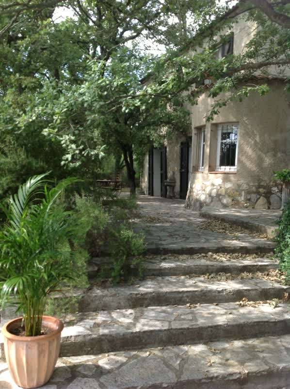
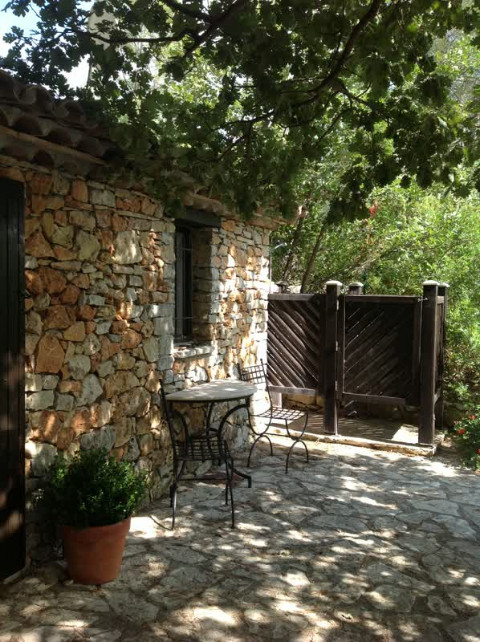
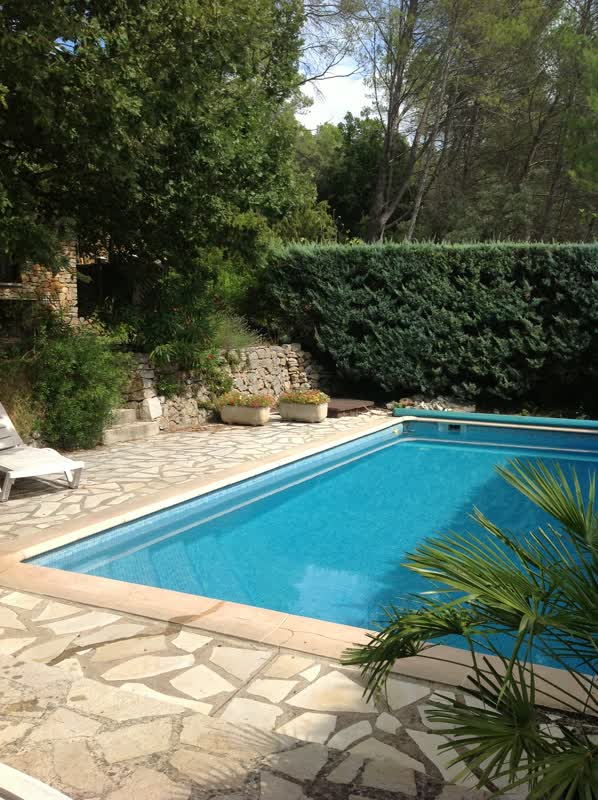

Maison pierre
Lorgues, Var, Provence
Välkommen till Maison Pierre

Romantiskt gammalt stenhus från 1850-talet renoverat med alla bekvämligheter samt ett separat inrett gästhus: ett provensalskt "cabanon".
Sex mycket bra sängplatser i huvudhuset, och två i dubbelsäng plus två på loftet för barn/ungdomar i bihuset, samtliga rum har fläktar. Tillgång till babysäng.
Ett badrum med badkar och wc, två duschrum med wc och en mycket omtyckt och använd utedusch.
Trådlöst internet med router för utomhusmottagning samt telefon för ingående samtal och utgående lokalsamtal.
Utekök/sommarkök med gasgrill utanför det ordinarie köket med gammalt gediget stenbord, den mest populära och centrala samlingsplatsen. Ytterligare ett mycket stort provencalskt matbord i järn för många sittande.
Huvudhuset är cirka 130 kvm i två plan. På övervåningen två separata avdelningar med dörr emellan.
Den ena avdelningen har två sovrum och mellanliggande badrum med stort badkar. Ett rum med dubbelsäng "Kungsrummet" och ett med två enkelsängar "Svartvita rummet".

Den andra avdelningen har ett stort sovrum med dubbelsäng och utgång till den övre terrassen, duschrum med ny tvättmaskin och torktumlare, samt ett litet kontorsrum med egen utgång till den övre parkeringsplatsen. I sovrummet finns stor vägg-TV med dvd-spelare.
I nedervåningen ingång till hall och vardagsrum med öppen spis, TV, DVD-spelare och stereo samt trevlig matplats med burspråk och modernt kök med gasspis/elugn.
Köket är mycket välutrustatat med glas och porslin mm.
Samtliga vitvaror är från senaste åren, diskmaskin, kyl och frys med ismaskin och separat vinkyl.

I bihuset/cabanon en dubbelsäng samt trappa upp till loftsäng, duschrum med bastu samt litet minikök och stort kylskåp.
Tack vare de olika in-och utgångarna och det separata boendet i bihuset finns stor flexibilitet och integritet i boendet. Tre par/familjer kan disponera sina privata delar av huset.
Egen boulebana, swimmingpool 4x8m, flera terrasser med olika matbord och rikligt med sittmöjligheter för samkväm. Stor insynsskyddad tomt med mycket grönska. Den
Den goda olivoljan från egen olivlund finns som ”complementary”.
Utsikt mot den berömda Michelinkrogen Chez Bruno över vägen känd för sin tryffelmeny.
Två kilometer bort ligger den gamla, lilla staden Lorgues med c:a 9.000 invånare. Där kan man bl.a. besöka departementet Vars största marknad varje tisdag.